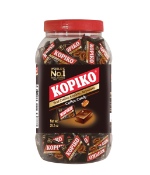
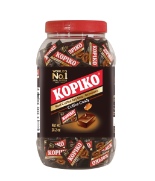

Kopiko Coffee Candy is the World’s #1 selling coffee candy,
made from the finest coffee beans, specially blended to give
you
enjoyment of real coffee without having to brew. It’s like
having a cup of coffee wherever you go.
Our bite sized, individually wrapped candies are available in regular
Coffee and Cappuccino flavors. We have many packaging
options for you
to choose from contact us for more information or visit our site.


 



Real coffee candy made with the finest Java Coffee Beans for a rich taste sensation.
Kopiko Coffee candies are tantalizingly tasty sweets with the sublime flavor and
rich aroma that only comes from real coffee
beans grown on the island of Java.
Java’s fertile, volcanic soil and tropical climate combine to create ideal conditions
for
growing the best coffee in the world. Quality is preserved by traditional farming
methods and the finest beans are handpicked
to ensure their freshness. These delicious
beans are used to create Kopiko candy and there is no mistaking that real coffee
taste.
Kopiko Coffee candies are enjoyed in over 80 countries worldwide for a genuine coffee
taste sensation anytime,
anywhere.
Kopiko is the essence of the highest quality coffee. A single Kopiko candy contains
real extract from real coffee beans. A real
coffee pleasure anytime you want. Taste it, coffee inside!